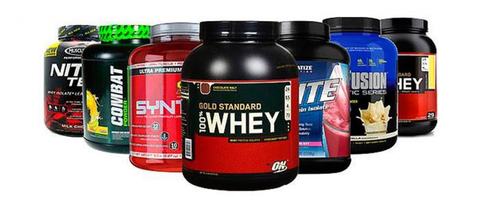
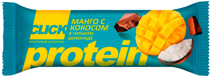
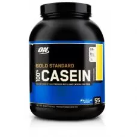
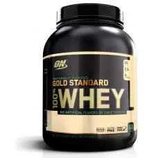
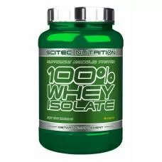

Протеин — это белок в чистом виде, освобожденный от лишних компонентов. Он содержит аминокислоты, которые хорошо сбалансированы, дает организму энергию, насыщает. Протеин укрепляет кости, улучшает обмен веществ.
В 80е годы для создания концентратов белка стали использовать сыворотку молока, остающуюся в процессе производства сыра. Это и положило начало появления сывороточного протеина и возникновению индустрии спортивного питания.
|  |
Для того чтобы подобрать себе протеин, вам нужно ориентироваться на свою цель в спорте и знать об особенностях разных видов протеина. |

  